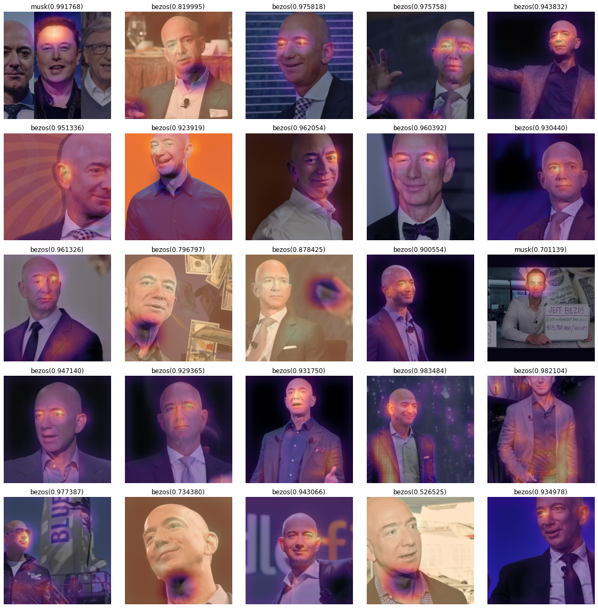
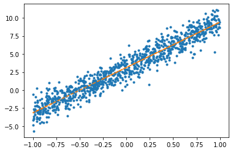
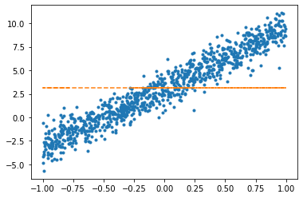
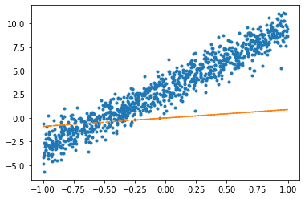
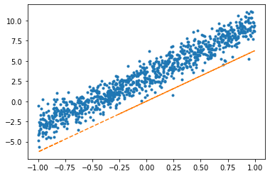
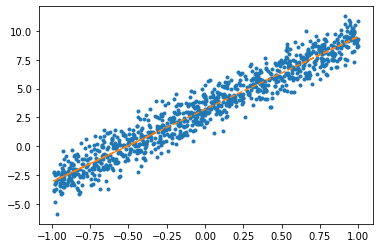
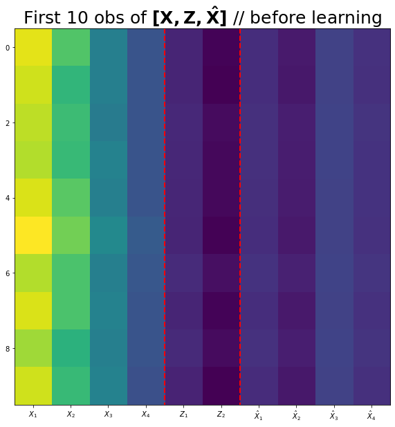
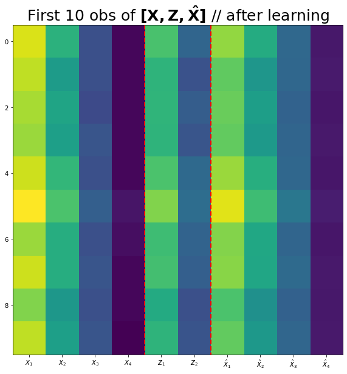

import torch
import pandas as pd
import matplotlib.pyplot as plt
from fastai.vision.all import *중간고사 대체과제
1. 크롤링을 통한 이미지 분석 및 CAM
(1) 두 가지 키워드로 크롤링을 수행하여 이미지자료를 모아라. (키워드는 각자 마음에 드는 것으로 설정할 것)
힌트1: hynn, iu 라는 키워드로 크롤링하여 이미지자료를 모으는 코드
#
# 크롤링에 필요한 준비작업들
#!pip install -Uqq duckduckgo_search
from duckduckgo_search import ddg_images
from fastdownload import download_url
from fastcore.all import *
def search_images(term, max_images=200): return L(ddg_images(term, max_results=max_images)).itemgot('image')#
# 폴더만드는코드 -- 사실 손으로 만들어도 무방함..
!mkdir images
!mkdir images/train
!mkdir images/test
!mkdir images/train/iu
!mkdir images/train/hynn
!mkdir images/test/iu
!mkdir images/test/hynndownload_images(dest='./images/train/iu',urls=search_images('iu',max_images=200)) # iu 라는 키워드로 200개 이미지 크롤링 -> ./images/train/iu 에 저장
time.sleep(10) # 서버과부하를 위한 휴식코드
download_images(dest='./images/train/hynn',urls=search_images('hynn',max_images=200)) # hynn 이라는 키워드로 200개 이미지 크롤링 -> ./images/train/hynn 에 저장
time.sleep(10) # 서버과부하를 위한 휴식코드
download_images(dest='./images/train/iu',urls=search_images('iu kpop',max_images=200)) # iu kpop 이라는 키워드로 200개 이미지 크롤링 -> ./images/train/iu 에 저장
time.sleep(10) # 서버과부하를 위한 휴식코드
download_images(dest='./images/train/hynn',urls=search_images('hynn kpop',max_images=200)) # hynn kpop 이라는 키워드로 200개 이미지 크롤링 -> ./images/train/hynn 에 저장
time.sleep(10) # 서버과부하를 위한 휴식코드 download_images(dest='./images/test/iu',urls=search_images('iu photo',max_images=50)) # iu photo 라는 키워드로 50개 이미지 크롤링 -> ./images/test/iu 에 저장
time.sleep(10) # 서버과부하를 위한 휴식코드
download_images(dest='./images/test/hynn',urls=search_images('hynn photo',max_images=50)) # hynn photo 라는 키워드로 50개 이미지 크롤링 -> ./images/test/hynn 에 저장
time.sleep(10) # 서버과부하를 위한 휴식코드 힌트2: 불량이미지 삭제
bad_images = verify_images(get_image_files('./images'))
bad_images- 불량이미지 목록
bad_images.map(Path.unlink)- 불량이미지는 dls를 불러올때 방해되므로 제거
!mkdir images/train/bezos
!mkdir images/train/musk
!mkdir images/test/bezos
!mkdir images/test/muskdownload_images(dest='./images/train/bezos',urls=search_images('jeff bezos',max_images=200))
time.sleep(10)
download_images(dest='./images/train/musk',urls=search_images('elon musk',max_images=200))
time.sleep(10)
download_images(dest='./images/train/bezos',urls=search_images('jeff bezos rich',max_images=200))
time.sleep(10)
download_images(dest='./images/test/musk',urls=search_images('elon musk rich',max_images=200))
time.sleep(10)
download_images(dest='./images/test/bezos',urls=search_images('jeff bezos photo',max_images=50)) # iu photo 라는 키워드로 50개 이미지 크롤링 -> ./images/test/iu 에 저장
time.sleep(10) # 서버과부하를 위한 휴식코드
download_images(dest='./images/test/musk',urls=search_images('elon usk photo',max_images=50)) # hynn photo 라는 키워드로 50개 이미지 크롤링 -> ./images/test/hynn 에 저장
time.sleep(10) # 서버과부하를 위한 휴식코드 bad_images = verify_images(get_image_files('./images'))
bad_images(#25) [Path('images/train/bezos/1d39746b-ad4d-49ac-ac25-0f569a94e3f2.jpg'),Path('images/train/bezos/ee365bea-bb15-4b79-9ebc-350d5a823ca8.JPG'),Path('images/train/bezos/289cbafa-0fbc-4be9-a39f-68429c876095.jpg'),Path('images/train/bezos/21495a5a-9602-42f5-8f7b-4978856bd1e8.jpg'),Path('images/train/bezos/3bd6c738-5361-4f95-9b3b-643904f5a135.jpg'),Path('images/train/bezos/2ca0722d-cb88-4f18-bc5f-c410bd16243f.jpg'),Path('images/train/bezos/e9924f91-aac6-4a11-a235-dacb7f80d576.jpg'),Path('images/train/bezos/fcc25b56-8807-4e52-bc37-6e1718994d8a.jpg'),Path('images/train/bezos/07e554ae-1261-4c81-b908-7c8d94e94702.jpg'),Path('images/train/bezos/ea6592bc-eff0-4db6-b93c-3b6e85897877.jpg')...]bad_images.map(Path.unlink)(#25) [None,None,None,None,None,None,None,None,None,None...](2) ImageDataLoaders.from_folder 를 이용하여 dls를 만들어라.
힌트1: dls를 만드는 코드
dls = ImageDataLoaders.from_folder(path = './images', train='train',valid='test',item_tfms=Resize(512),bs=8) dls.show_batch()dls = ImageDataLoaders.from_folder(path = './images', train='train',valid='test',item_tfms=Resize(512),bs=8) dls.show_batch()(3) resnet34를 이용하여 학습하라.
lrnr = vision_learner(dls,resnet34,metrics=accuracy) lrnr.fine_tune(5)| epoch | train_loss | valid_loss | accuracy | time |
|---|---|---|---|---|
| 0 | 0.623527 | 0.999150 | 0.695341 | 00:07 |
/home/csy/anaconda3/envs/py37/lib/python3.7/site-packages/PIL/Image.py:960: UserWarning: Palette images with Transparency expressed in bytes should be converted to RGBA images
"Palette images with Transparency expressed in bytes should be "| epoch | train_loss | valid_loss | accuracy | time |
|---|---|---|---|---|
| 0 | 0.350595 | 1.298542 | 0.695341 | 00:09 |
| 1 | 0.228978 | 1.561831 | 0.759857 | 00:08 |
| 2 | 0.185354 | 1.211755 | 0.806452 | 00:08 |
| 3 | 0.210802 | 1.586954 | 0.731183 | 00:08 |
| 4 | 0.210048 | 0.952422 | 0.820789 | 00:08 |
/home/csy/anaconda3/envs/py37/lib/python3.7/site-packages/PIL/Image.py:960: UserWarning: Palette images with Transparency expressed in bytes should be converted to RGBA images
"Palette images with Transparency expressed in bytes should be "
/home/csy/anaconda3/envs/py37/lib/python3.7/site-packages/PIL/Image.py:960: UserWarning: Palette images with Transparency expressed in bytes should be converted to RGBA images
"Palette images with Transparency expressed in bytes should be "
/home/csy/anaconda3/envs/py37/lib/python3.7/site-packages/PIL/Image.py:960: UserWarning: Palette images with Transparency expressed in bytes should be converted to RGBA images
"Palette images with Transparency expressed in bytes should be "
/home/csy/anaconda3/envs/py37/lib/python3.7/site-packages/PIL/Image.py:960: UserWarning: Palette images with Transparency expressed in bytes should be converted to RGBA images
"Palette images with Transparency expressed in bytes should be "
/home/csy/anaconda3/envs/py37/lib/python3.7/site-packages/PIL/Image.py:960: UserWarning: Palette images with Transparency expressed in bytes should be converted to RGBA images
"Palette images with Transparency expressed in bytes should be "(4) CAM (class activation mapping)을 이용하여 (3)의 모형의 판단근거를 시각화하라.
net1= lrnr.model[0]
net2= lrnr.model[1]_X, _y = dls.one_batch() net1.to("cpu")
net2.to("cpu")
_X = _X.to("cpu")print(net1(_X).shape)
print(net2[0](net1(_X)).shape)
print(net2[1](net2[0](net1(_X))).shape)
print(net2[2](net2[1](net2[0](net1(_X)))).shape)torch.Size([8, 512, 16, 16])
torch.Size([8, 1024, 1, 1])
torch.Size([8, 1024])
torch.Size([8, 1024])net2= torch.nn.Sequential(
torch.nn.AdaptiveAvgPool2d(output_size=1), # (64,512,16,16) -> (64,512,1,1)
torch.nn.Flatten(), # (64,512,1,1) -> (64,512)
torch.nn.Linear(512,2,bias=False) # (64,512) -> (64,2)
)net = torch.nn.Sequential(
net1,
net2
)lrnr2= Learner(dls,net,metrics=accuracy) lrnr2.loss_func, lrnr.loss_func(FlattenedLoss of CrossEntropyLoss(), FlattenedLoss of CrossEntropyLoss())lrnr2.fine_tune(5) | epoch | train_loss | valid_loss | accuracy | time |
|---|---|---|---|---|
| 0 | 0.473621 | 7.780233 | 0.831541 | 00:08 |
/home/csy/anaconda3/envs/py37/lib/python3.7/site-packages/PIL/Image.py:960: UserWarning: Palette images with Transparency expressed in bytes should be converted to RGBA images
"Palette images with Transparency expressed in bytes should be "| epoch | train_loss | valid_loss | accuracy | time |
|---|---|---|---|---|
| 0 | 0.358073 | 1.187476 | 0.767025 | 00:08 |
| 1 | 0.378113 | 3.513460 | 0.236559 | 00:09 |
| 2 | 0.410308 | 0.585618 | 0.713262 | 00:08 |
| 3 | 0.339331 | 0.728930 | 0.713262 | 00:08 |
| 4 | 0.250342 | 0.674079 | 0.745520 | 00:08 |
/home/csy/anaconda3/envs/py37/lib/python3.7/site-packages/PIL/Image.py:960: UserWarning: Palette images with Transparency expressed in bytes should be converted to RGBA images
"Palette images with Transparency expressed in bytes should be "
/home/csy/anaconda3/envs/py37/lib/python3.7/site-packages/PIL/Image.py:960: UserWarning: Palette images with Transparency expressed in bytes should be converted to RGBA images
"Palette images with Transparency expressed in bytes should be "
/home/csy/anaconda3/envs/py37/lib/python3.7/site-packages/PIL/Image.py:960: UserWarning: Palette images with Transparency expressed in bytes should be converted to RGBA images
"Palette images with Transparency expressed in bytes should be "
/home/csy/anaconda3/envs/py37/lib/python3.7/site-packages/PIL/Image.py:960: UserWarning: Palette images with Transparency expressed in bytes should be converted to RGBA images
"Palette images with Transparency expressed in bytes should be "
/home/csy/anaconda3/envs/py37/lib/python3.7/site-packages/PIL/Image.py:960: UserWarning: Palette images with Transparency expressed in bytes should be converted to RGBA images
"Palette images with Transparency expressed in bytes should be "sftmax = torch.nn.Softmax(dim=1)path = './images'fig, ax = plt.subplots(5,5)
k=200
for i in range(5):
for j in range(5):
x, = first(dls.test_dl([PILImage.create(get_image_files(path)[k])]))
why = torch.einsum('cb,abij -> acij', net2[2].weight, net1(x))
why_bezos = why[0,0,:,:]
why_musk = why[0,1,:,:]
bezosprob, muskprob = sftmax(net(x))[0][0].item(), sftmax(net(x))[0][1].item()
if bezosprob>muskprob:
dls.train.decode((x,))[0].squeeze().show(ax=ax[i][j])
ax[i][j].imshow(why_bezos.to("cpu").detach(),alpha=0.5,extent=(0,511,511,0),interpolation='bilinear',cmap='magma')
ax[i][j].set_title("bezos(%2f)" % bezosprob)
else:
dls.train.decode((x,))[0].squeeze().show(ax=ax[i][j])
ax[i][j].imshow(why_musk.to("cpu").detach(),alpha=0.5,extent=(0,511,511,0),interpolation='bilinear',cmap='magma')
ax[i][j].set_title("musk(%2f)" % muskprob)
k=k+1
fig.set_figwidth(16)
fig.set_figheight(16)
fig.tight_layout()
2. Overparameterized Model
(풀이 있음)
아래와 같은 자료가 있다고 가정하자.
x = torch.rand([1000,1])*2-1
y = 3.14 + 6.28*x + torch.randn([1000,1]) plt.plot(x,y,'o',alpha=0.1)
(1) 아래의 모형을 가정하고 \(\beta_0,\beta_1\)을 파이토치를 이용하여 추정하라.
- \(y_i = \beta_0 + \beta_1 x_i + \epsilon_i,\quad \epsilon_i \sim N(0,\sigma^2)\)
net = torch.nn.Linear(in_features=1,out_features=1)optimizr = torch.optim.SGD(net.parameters(),lr=1/10) plt.plot(x,y,'.')
plt.plot(x,net(x).data,'--')
for epoc in range(100):
yhat = net(x)
loss = torch.mean((yhat-y)**2)
loss.backward()
optimizr.step()
optimizr.zero_grad() plt.plot(x,y,'.')
plt.plot(x,net(x).data,'--')
net.weight.data, net.bias.data(tensor([[6.2839]]), tensor([3.1322]))(2) 아래의 모형을 가정하고 \(\beta_0\)를 파이토치를 이용하여 추정하라.
- \(y_i = \beta_0 + \epsilon_i,\quad \epsilon_i \sim N(0,\sigma^2)\)
W0hat = torch.tensor([0.0], requires_grad=True)W0hattensor([0.], requires_grad=True)plt.plot(x,y,'.')
plt.plot(x,(0*x+W0hat).data,'--')
for epoc in range(100):
yhat = 0 * x + W0hat
loss = torch.mean((y-yhat)**2)
loss.backward()
W0hat.data = W0hat.data - 0.1*W0hat.grad
W0hat.grad = Noneplt.plot(x,y,'.')
plt.plot(x,(0*x+W0hat).data,'--')
W0hattensor([3.1188], requires_grad=True)(3) 아래의 모형을 가정하고 \(\beta_1\)을 파이토치를 이용하여 추정하라.
- \(y_i = \beta_1x_i + \epsilon_i \quad \epsilon_i \sim N(0,\sigma^2)\)
net = torch.nn.Linear(1,1,bias = False)plt.plot(x,y,'.')
plt.plot(x,net(x).data,'--')
optimizr = torch.optim.SGD(net.parameters(),lr=1/10) for epoc in range(100):
yhat = net(x)
loss = torch.mean((y-yhat)**2)
loss.backward()
optimizr.step()
optimizr.zero_grad() plt.plot(x,y,'.')
plt.plot(x,net(x).data,'--')
net.weight.datatensor([[6.2637]])(4) 아래의 모형을 가정하고 \(\alpha_0,\beta_0,\beta_1\)을 파이토치를 이용하여 추정하라.
- \(y_i = \alpha_0+\beta_0+ \beta_1x_i + \epsilon_i \quad \epsilon_i \sim N(0,\sigma^2)\)
\(\hat{\alpha}_0+\hat{\beta}_0\)은 얼마인가? 이 값과 문제 (1)에서 추정된 \(\hat{\beta_0}\)의 값과 비교하여 보라.
_1= torch.ones([1000,1])
X = torch.concat([_1,x],axis=1)net = torch.nn.Linear(in_features=2,out_features=1)optimizr = torch.optim.SGD(net.parameters(),lr=1/10) plt.plot(x,y,'.')
plt.plot(x,net(X).data,'--')for epoc in range(100):
yhat = net(X)
loss = torch.mean((yhat-y)**2)
loss.backward()
optimizr.step()
optimizr.zero_grad() plt.plot(x,y,'.')
plt.plot(x,net(X).data,'--')
net.weight.data, net.bias.data(tensor([[1.5093, 6.2918]]), tensor([1.6958]))1.7377 + 1.43583.17349999999999986.23636.2363(5) 아래의 모형을 가정하고 \(\alpha_0,\alpha_1,\beta_0,\beta_1\)을 파이토치를 이용하여 추정하라. – 이거 제가 힌트를 잘못줬어요.. 문제가 좀 어렵게나왔네요 ㅠㅠ
- \(y_i = \alpha_0+\beta_0+ \beta_1x_i + \alpha_1x_i + \epsilon_i \quad \epsilon_i \sim N(0,\sigma^2)\)
\(\hat{\alpha}_0+\hat{\beta}_0\), \(\hat{\alpha}_1 + \hat{\beta}_1\)의 값은 각각 얼마인가? 이 값들을 (1) 에서 추정된 \(\hat{\beta}_0\), \(\hat{\beta}_1\) 값들과 비교하라.
_1= torch.ones([1000,1])
X = torch.concat([_1,x,x],axis=1)net = torch.nn.Linear(in_features=3,out_features=1)optimizr = torch.optim.SGD(net.parameters(),lr=1/10) plt.plot(x,y,'.')
plt.plot(x,net(X).data,'--')for epoc in range(100):
yhat = net(X)
loss = torch.mean((yhat-y)**2)
loss.backward()
optimizr.step()
optimizr.zero_grad() plt.plot(x,y,'.')
plt.plot(x,net(X).data,'--')net.weight.data, net.bias.data(tensor([[1.2913, 3.4037, 2.8956]]), tensor([1.9138]))1.9599 + 1.21383.17373.2835 + 2.95856.242(6) 다음은 위의 모형에 대하여 학생들이 discussion한 결과이다. 올바르게 해석한 학생을 모두 골라라.
민정: \((x_i,y_i)\)의 산점도는 직선모양이고 직선의 절펴과 기울기 모두 유의미해 보이므로 \(y_i = \beta_0 + \beta_1 x_i\) 꼴을 적합하는게 좋겠다.
슬기: 나도 그렇게 생각해. 그래서 (2)-(3)과 같이 기울기를 제외하고 적합하거나 절편을 제외하고 적합하면 underfitting의 상황에 빠질 수 있어.
성재: (2)의 경우 사실상 \(\bar{y}=\frac{1}{n}\sum_{i=1}^{n}y_i\)를 추정하는 것과 같아지게 되지.
세민: (4)의 경우 \({\bf X}=\begin{bmatrix} 1 & x_1 \\ 1 & x_2 \\ \dots & \dots \\ 1 & x_n \end{bmatrix}\) 와 같이 설정하고 네트워크를 아래와 같이 설정할 경우 얻어지는 모형이야.
net = torch.nn.Linear(in_features=2,out_features=1,bias=True)구환: 모델 (4)-(5)는 표현력은 (1)과 동일하지만 추정할 파라메터는 (1)보다 많으므로 효율적인 모델이라고 볼 수 없어.
answer : 민정, 슬기, 세민, 구환
이 문제의 경우 풀이를 여기에서 확인할 수 있습니다.
3. 차원축소기법과 표현학습
다음은 아이리스데이터를 불러오는 코드이다. (아이리스 데이터에 대한 자세한 설명은 생략한다. 잘 모르는 학생은 구글검색을 해볼 것)
df = pd.read_csv("https://raw.githubusercontent.com/guebin/STML2022/master/_notebooks/iris.csv")
df| Sepal Length | Sepal Width | Petal Length | Petal Width | Species | |
|---|---|---|---|---|---|
| 0 | 5.1 | 3.5 | 1.4 | 0.2 | setosa |
| 1 | 4.9 | 3.0 | 1.4 | 0.2 | setosa |
| 2 | 4.7 | 3.2 | 1.3 | 0.2 | setosa |
| 3 | 4.6 | 3.1 | 1.5 | 0.2 | setosa |
| 4 | 5.0 | 3.6 | 1.4 | 0.2 | setosa |
| ... | ... | ... | ... | ... | ... |
| 145 | 6.7 | 3.0 | 5.2 | 2.3 | virginica |
| 146 | 6.3 | 2.5 | 5.0 | 1.9 | virginica |
| 147 | 6.5 | 3.0 | 5.2 | 2.0 | virginica |
| 148 | 6.2 | 3.4 | 5.4 | 2.3 | virginica |
| 149 | 5.9 | 3.0 | 5.1 | 1.8 | virginica |
150 rows × 5 columns
X = torch.tensor(df.drop(columns=['Species']).to_numpy(), dtype=torch.float32)(1) 아래를 만족하도록 적당한 아키텍처, 손실함수를 설계하라. (손실함수는 MSE를 이용)
\(\underset{(150,4)}{\bf X} \overset{l_1}{\to} \underset{(150,2)}{\bf Z} \overset{l_2}{\to} \underset{(150,4)}{\bf \hat X}\)
\({\bf \hat X} \approx {\bf X}\)
차원축소
X[:5]tensor([[5.1000, 3.5000, 1.4000, 0.2000],
[4.9000, 3.0000, 1.4000, 0.2000],
[4.7000, 3.2000, 1.3000, 0.2000],
[4.6000, 3.1000, 1.5000, 0.2000],
[5.0000, 3.6000, 1.4000, 0.2000]])X.shapetorch.Size([150, 4])net = torch.nn.Sequential(
torch.nn.Linear(4,2,bias=False),
torch.nn.Linear(2,4,bias = False)
)Z = net[0](X)Z.type()'torch.FloatTensor'Z[:5]tensor([[-0.8808, -1.5322],
[-0.8771, -1.5868],
[-0.8091, -1.4178],
[-0.8198, -1.4608],
[-0.8528, -1.4621]], grad_fn=<SliceBackward0>)Xhat = net[1](net[0](X))Xhat.type()'torch.FloatTensor'Xhat[:5]tensor([[-0.6900, -1.1176, -0.2331, -0.6170],
[-0.6969, -1.1495, -0.2264, -0.6290],
[-0.6355, -1.0328, -0.2131, -0.5692],
[-0.6478, -1.0610, -0.2137, -0.5826],
[-0.6646, -1.0692, -0.2276, -0.5922]], grad_fn=<SliceBackward0>)(2) 아래코드를 이용하여 \({\bf X}\), \({\bf Z}\), \({\bf \hat{X}}\)를 시각화 하라.
(시각화예시)
fig,ax = plt.subplots(figsize=(10,10))
ax.imshow(torch.concat([X,Z,Xhat],axis=1)[:10])
ax.set_xticks(np.arange(0,10))
ax.set_xticklabels([r'$X_1$',r'$X_2$',r'$X_3$',r'$X_4$',r'$Z_1$',r'$Z_2$',r'$\hat{X}_1$',r'$\hat{X}_2$',r'$\hat{X}_3$',r'$\hat{X}_4$'])
ax.vlines([3.5,5.5],ymin=-0.5,ymax=9.5,lw=2,color='red',linestyle='dashed')
ax.set_title(r'First 10 obs of $\bf [X, Z, \hat{X}]$ // before learning',size=25);fig,ax = plt.subplots(figsize=(10,10))
ax.imshow(torch.concat([X,Z.data,Xhat.data],axis=1)[:10])
ax.set_xticks(np.arange(0,10))
ax.set_xticklabels([r'$X_1$',r'$X_2$',r'$X_3$',r'$X_4$',r'$Z_1$',r'$Z_2$',r'$\hat{X}_1$',r'$\hat{X}_2$',r'$\hat{X}_3$',r'$\hat{X}_4$'])
ax.vlines([3.5,5.5],ymin=-0.5,ymax=9.5,lw=2,color='red',linestyle='dashed')
ax.set_title(r'First 10 obs of $\bf [X, Z, \hat{X}]$ // before learning',size=25);
(3) 네트워크를 학습시키고 \({\bf X}, {\bf Z}, {\bf \hat{X}}\)를 시각화하라.
(시각화예시)
fig,ax = plt.subplots(figsize=(10,10))
ax.imshow(torch.concat([X,Z,Xhat],axis=1)[:10])
ax.set_xticks(np.arange(0,10))
ax.set_xticklabels([r'$X_1$',r'$X_2$',r'$X_3$',r'$X_4$',r'$Z_1$',r'$Z_2$',r'$\hat{X}_1$',r'$\hat{X}_2$',r'$\hat{X}_3$',r'$\hat{X}_4$'])
ax.vlines([3.5,5.5],ymin=-0.5,ymax=9.5,lw=2,color='red',linestyle='dashed')
ax.set_title(r'First 10 obs of $\bf [X, Z, \hat{X}]$ // after learning',size=25);optimizr= torch.optim.Adam(net.parameters())loss_fn= torch.nn.MSELoss()for epoc in range(2000):
## 1
Z = net[0](X)
Xhat = net[1](Z)
## 2
loss=loss_fn(Xhat,X)
## 3
loss.backward()
## 4
optimizr.step()
optimizr.zero_grad() fig,ax = plt.subplots(figsize=(10,10))
ax.imshow(torch.concat([X,Z.data,Xhat.data],axis=1)[:10])
ax.set_xticks(np.arange(0,10))
ax.set_xticklabels([r'$X_1$',r'$X_2$',r'$X_3$',r'$X_4$',r'$Z_1$',r'$Z_2$',r'$\hat{X}_1$',r'$\hat{X}_2$',r'$\hat{X}_3$',r'$\hat{X}_4$'])
ax.vlines([3.5,5.5],ymin=-0.5,ymax=9.5,lw=2,color='red',linestyle='dashed')
ax.set_title(r'First 10 obs of $\bf [X, Z, \hat{X}]$ // after learning',size=25);
(4) (3)의 결과로 학습된 \(Z\)를 입력벡터로 하고 \(Z \to y=\text{Species}\) 로 향하는 적당한 네트워크를 설계한 뒤 학습하라.
x->y가는 mapping 안 찾아도 - z->y 가는 mapping 적절히 잘 찾으면 - x->y 적용가능한 linear function 찾기 가능
Z.shapetorch.Size([150, 2])net = torch.nn.Linear(2,4)loss_fn= torch.nn.CrossEntropyLoss()optimizr= torch.optim.Adam(net.parameters())def f(txt,mapping):
return [mapping[key] for key in txt] mapping = {'setosa':0,'versicolor':1,'virginica':2}y_base = list(df['Species'])y = torch.tensor(f(y_base,mapping))y.unique()tensor([0, 1, 2])for epoc in range(2000):
## 1
yhat = net(Z.data)
## 2
loss=loss_fn(yhat,y)
## 3
loss.backward()
## 4
optimizr.step()
optimizr.zero_grad() net.weightParameter containing:
tensor([[ 0.1512, 1.0270],
[ 0.1297, -1.1137],
[ 0.6069, -1.1514],
[-0.5099, -0.4560]], requires_grad=True)(5) (1)~(4)의 결과를 토의한 내용이다. 적절하게 토의한 사람을 모두 고르라.
규빈: \({\bf Z}\)는 \({\bf X}\)보다 적은 feature를 가지고 있다. 또한 적절한 선형변환을 하면 \({\bf X}\)와 비슷한 \({\bf \hat X}\)을 만들 수 있으므로 \({\bf X}\)의 정보량 대부분 유지한채로 효과적으로 차원을 줄인 방법이라 볼 수 있다.
민정: 즉 \({\bf X}\)에서 \({\bf y}\)로 가는 맵핑을 학습하는 과업은 \({\bf Z}\)에서 \({\bf y}\)로 가는 맵핑을 학습하는 과업은 거의 동등하다고 볼 수 있다.
성재: \({\bf Z}\)의 차원을 (n,4)로 설정한다면 이론상 \({\bf X}\)와 동일한 \({\bf \hat X}\)을 만들어 낼 수 있다.
슬기: \({\bf Z}\)의 차원이 (n,2)일지라도 경우에 따라서 \({\bf X}\)와 동일한 \({\bf \hat X}\)을 만들어 낼 수 있다.
answer : 규빈, 민정, 성재, 슬기